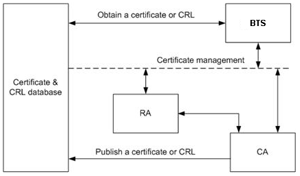
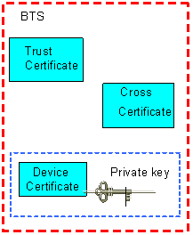
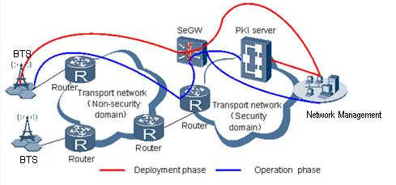
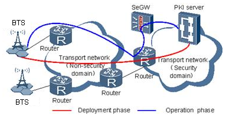
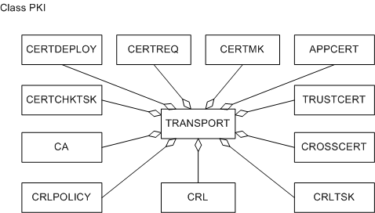
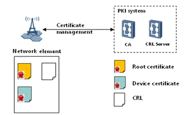

This section describes the functions and concepts of the
public key infrastructure (PKI) system architecture, digital certificate
classifications, and device certificate management. It also provides
the managed object model (MOM) view and describes managed objects
(MOs) related to device certificates, trust certificates, and certificate
revocation lists (CRLs).
Functions and Concepts
PKI System Architecture
PKI is a system that generates, distributes, activates, and
revokes digital certificates. A PKI system consists of NEs, a Certificate
Authority (CA), a Registration Authority (RA), and a certificate &
CRL database for storing digital certificates and CRLs. The RA is
optional.
Figure 1 shows the PKI system architecture.
Figure 1 PKI system architecture

The RA
directly interacts with eNodeBs or the operation and maintenance (OM)
personnel. It collects and authenticates information about digital
certificate applicants, and decides whether to issue digital certificates
to them. If an applicant is proved qualified, the RA sends the applicant's
digital certificate request to the CA. Then, the CA issues a certificate
to the certificate & CRL database.
Revoked certificates
are recorded in a CRL. The CA issues the CRL to a specified certificate
& CRL database. A base station obtains the CRL from the database
to check whether a peer digital certificate has been revoked.
Digital Certificate Classifications
A base station supports
three types of digital certificates: device certificates, trust certificates,
and cross-certificates, as shown in
Figure 2.
Figure 2 Digital certificates supported by the eNodeBs

For details about Digital certificates are as follows:
- Device Certificate
A device certificate identifies a device.
Each device certificate is associated with a unique private key.
Each base station stores a Huawei-issued device certificate named appcert.pem. This device certificate is issued by Huawei
CA and activated automatically before delivery.
- Trust Certificate
A trust certificate contains a root certificate
and a certificate chain.
The root certificate, issued by a root
CA, is a top-most certificate used to verify other certificates in
the certificate chain.
The base station uses trust certificates
to authenticate peer devices in the following ways:
- Each base station stores a Huawei root certificate named appcert.pem. This root certificate is issued by Huawei
CA and activated automatically before delivery. The Huawei base station
supports mutual authentication of other devices configured with Huawei
device and root certificates.
- To authenticate an operator's device, for
example, a Security Gateway (SeGW),the base station must be configured
with a root certificate issued by the operator's CA (referred to as
operator's root certificate in this document). Similarly, to authenticate
a Huawei base station, the operator's device must be preconfigured
with a trusted Huawei root certificate.
- Cross-Certificate
A cross-certificate is used for cross-certification
between CAs or devices of different PKI systems.
The cross-certificate
is issued by a CA in one PKI system to a trusted CA in another PKI
system.
Cross-certificates are an alternative to root certificates
in cross-certification between a Huawei base station and an operator's
device.
Certificate Management- Certificate Management Mode
base station device certificates
are managed in the following modes: Network Management-assisted certificate
management and direct certificate management. After deployment, a
base station manages device certificates in either Network Management-assisted
certificate management mode or direct certificate management mode
by replacing, updating, or checking a device certificate.
- Network Management-Assisted Certificate Management
The Network
Management communicates with a CA through a standard Certificate Management
Protocol version 2 (CMPv2) interface and communicates with eNodeBs
through private man-machine language (MML) interfaces. The Network
Management manages certificate requests, updates, and revocation.
In other words, the Network Management serves as an OM platform and
also as a proxy between eNodeBs and the CA when managing device certificates.
Figure 3 shows how the base station device certificates
are managed in Network Management-assisted certificate management
mode.
Figure 3 Network Management-assisted certificate management mode for
base station device certificates

Network
Management-assisted certificate management requires each base station
or operator's device be configured with a Huawei root certificate
or an operator's root certificate, respectively. After the devices
access the live network, those preconfigured certificates are updated
on the Network Management manually.
- Direct Certificate Management
In direct certificate management
mode, both the eNodeBs and the Network Management provide the CMPv2
interface, and eNodeBs directly communicate with a CA. The eNodeBs
manage certificate requests, updates, and revocation. When managing
device certificates, the eNodeBs communicate with the CA by exchanging
CMPv2 messages. The Network Management serves only as an OM platform.
Figure 4 shows how the base station device certificates
are managed in direct certificate management mode.
Figure 4 Direct certificate management mode for base station device
certificates

Direct
certificate management is an automatic process. In this situation,
no preconfigured certificate is required. The eNodeBs can directly
apply for certificates to access the live network.
- Certificate Management Method
Replacing a Certificate
During device certificate replacement, the current device
certificate is deactivated and a new one is activated. Possible scenarios
for device certificate replacement are as follows:
- The operator deploys a PKI system before deploying a base station.
To access a transport network, the base station requests a device
certificate issued by the operator's CA (referred to as operator-issued
device certificate in this document) to replace the preconfigured
Huawei-issued device certificate.
- The operator deploys a PKI system after deploying a base station.
The base station requests an operator-issued device certificate to
replace the preconfigured Huawei-issued device certificate.
- The device certificate of a base station is revoked before it
expires because the private key is not complex enough or disclosed.
- A base station is moved from the management area of one CA to
another.
Updating a Certificate
If a device certificate
expires or the location of a base station changes, the device certificate
of the base station must be updated to ensure correctness of the certificate.
Checking a Certificate
Before communicating with
the peer end, a base station must check whether the device certificate
of the peer end is in the CRL for security concerns. This CRL can
be loaded onto the base station manually by OM personnel on the Network
Management or the Local Maintenance Terminal (LMT). Alternatively,
the administrator can create a scheduled task so that the base station
downloads the CRL automatically and periodically from a certificate
& CRL database. If the device certificate of the peer end is found
in the CRL, the base station reports an alarm or stops the communication
with the peer end, according to the configuration.
Deploying
a Certificate
A device certificate is configured on an LTE
main processing and transmission unit (LMPT) or a universal transmission
processing unit (UTRP) where other boards can obtain the certificate
as required.
For details about the PKI system, see the corresponding
feature parameter description document.
Managed Object Model
Figure 5 shows the PKI MOM of MOs related to CRLs.
Figure 5 PKI MOM of MOs related to CRLs

MOs related to PKI are classified into three categories: MOs related
to device certificates, MOs related to trust certificates (including
root certificates), and MOs related to CRLs.
Figure 6 MOs related to PKI

MOs related to device certificates, trust certificates, and CRLs
are as follows:
- MOs related to device certificates are CERTREQ, CERTMK, APPCERT, CERTCHKTSK and CA. Device certificates are used to authenticate
the identities of NEs.
- MOs related to trust certificates (including root certificates)
are TRUSTCERT and CROSSCERT. Root certificates are
the device certificates of root CAs. They are used to check validity
of device certificates issued by the CAs.
- MOs related to CRLs are CRL, CRLTSK and CRLPOLICY. A CRL is used to record
certificates that are revoked because of key disclosure or certificate
expiry. Using a CRL, an NE checks validity of certificates and decides
to generate alarms or break connections, depending on users' policies.
This section describes MOs related to PKI shown in
Figure 1.